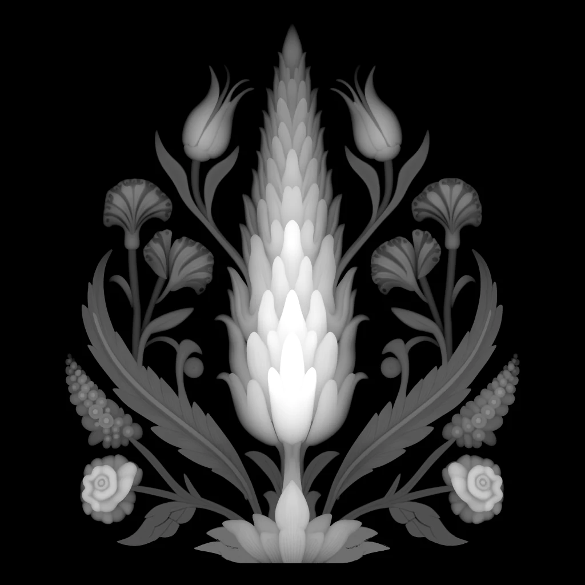

Cantilena
İznik çini geleneğinin servi, lale, karanfil ve gül motifleri, tekrarsız kurgulanmış tek bir panelde buluşuyor. Panel duvarda tek başına ya da düz yüzeyler arasında bir vurgu olarak durur.

- Ölçü
- 600 × 600 mm
- Rölyef
- 16 mm
- Kurgu
- Tek panel, tekrarsız kompozisyon
- Malzeme
- Lumina PMAG™ (polimer modifiye kompozit alçı)
- Yüzey
- Boyaya hazır ya da artizan finish ile


Desen
Cantilena, İznik çini geleneğinin dört bitkisini, servi, lale, karanfil ve gülü, tek bir panelin içinde toplar. Motifler bir tekrar düzenine dizilmez; kompozisyon panelin kendi sınırları içinde kurulur, başlar ve biter. Bu yüzden yüzey bir desen şeridi gibi değil, duvardaki tek bir resim gibi okunur.
Rölyef 16 mm derinliğe ulaşır. Bu derinlik motiflerin kenarlarında net gölgeler, yapraklar arasında okunur ayrımlar verir. Panel uzaktan bir siluet, yakından ise ayrıntı sunar.
Işıkta okunuşu
Sayfanın başındaki görüntü canlı ışık altındadır. Işığın açısı değiştikçe servinin gövdesi, lale taçları ve gül yaprakları sırayla öne çıkar. Aynı panel yalama ışıkta derin ve hareketli, dik ışıkta ise sakin ve neredeyse düz görünür; hangisini alacağı duvarın yerine bağlıdır.
Duvarda
Cantilena 600 × 600 mm ölçüsünde tek bir panel olarak tasarlanmıştır. Tek başına bir duvarın odağı olabilir ya da düz yüzeylerin arasında tek vurgu olarak yer alabilir. Yan yana dizmek için kurulmuş bir tekrar düzeni yoktur; bu panelin gücü, kendi başına bir bütün olmasındadır.
Bu tasarımın duvarınızda nasıl yerleşeceğini görmek için duvar ölçülerinizi iletin.